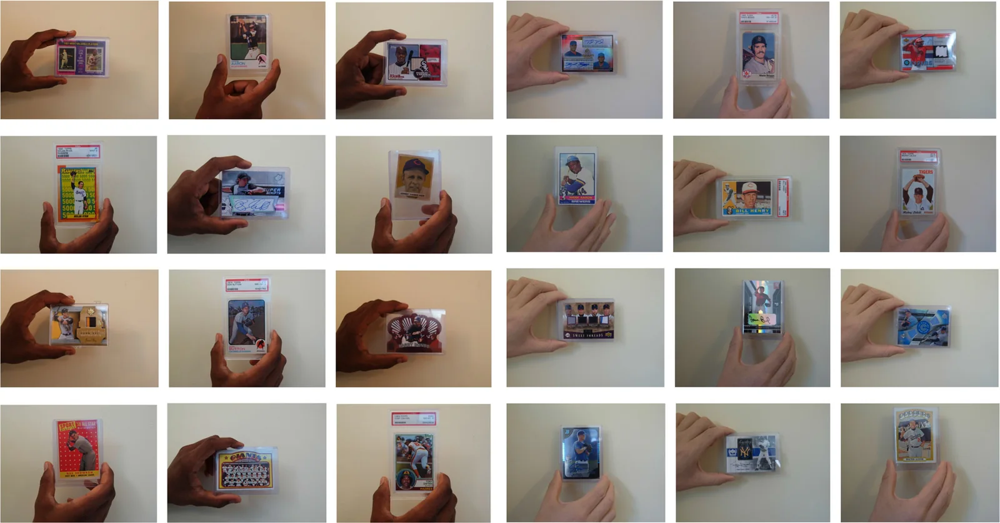
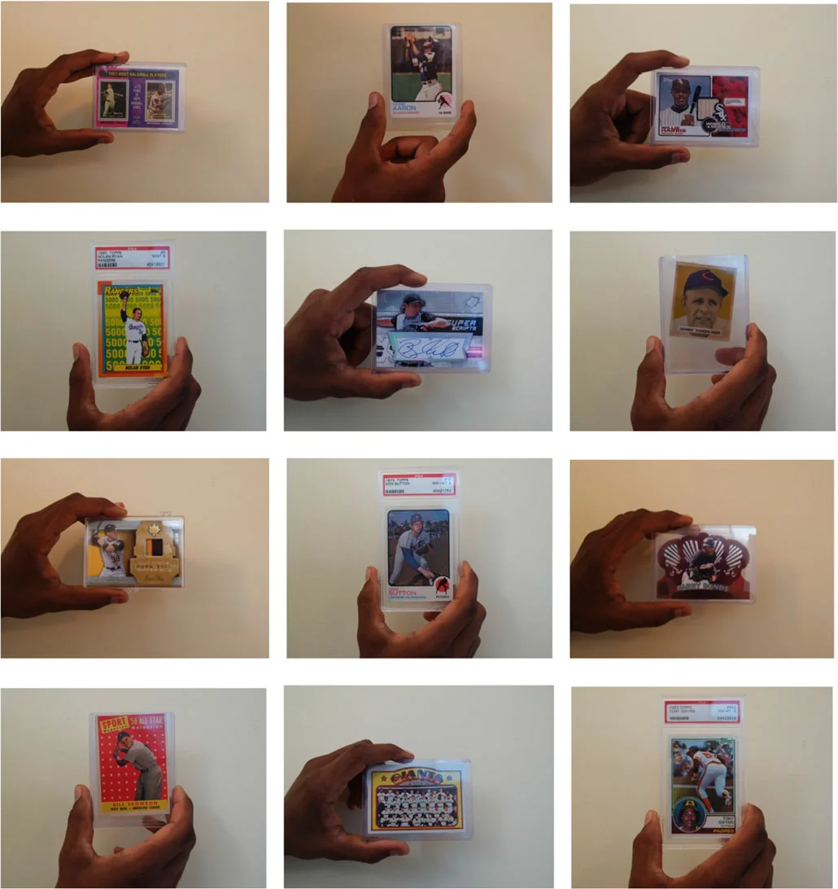
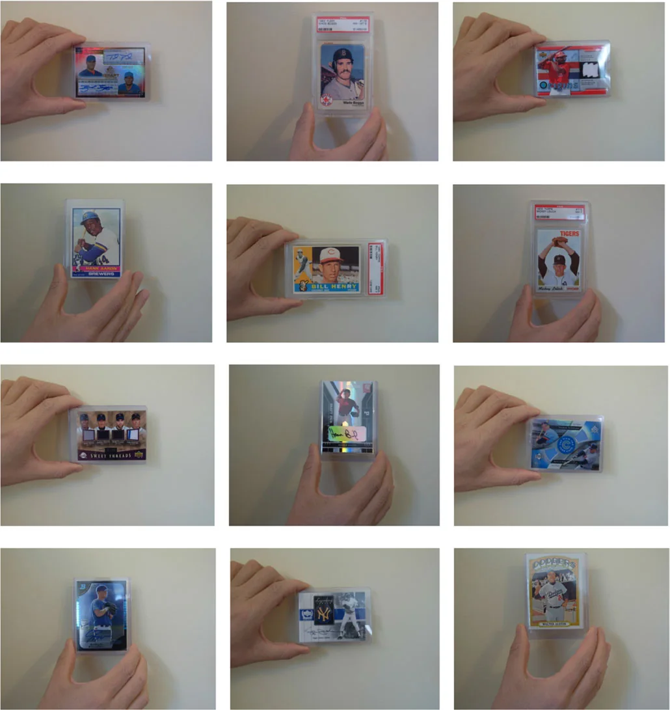
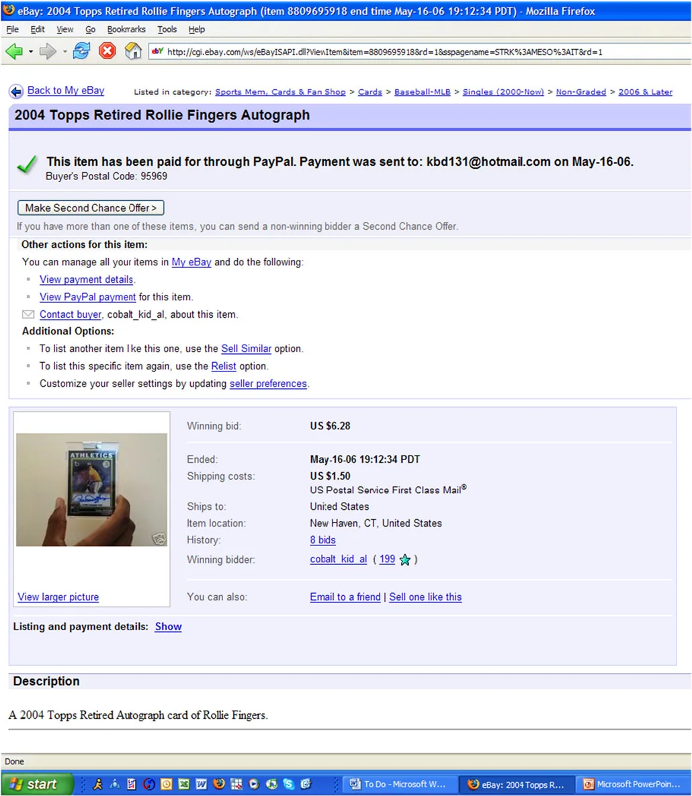
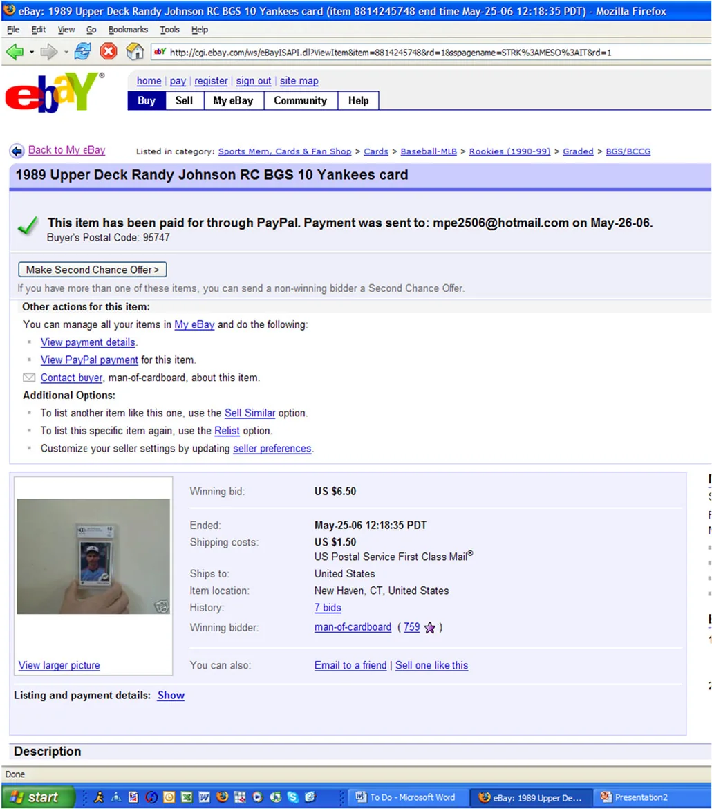

The UI We Keep Underestimating: What a Baseball Card Study Can Teach SaaS Product Managers
Functionality gets you into the conversation. Experience shapes the perception.

Functionality gets you into the conversation. Experience shapes the perception.

As SaaS Product Managers, we spend a lot of time thinking about functionality. We obsess over workflows, edge cases, integrations and whether the product solves the customer's problem. The UI often comes later, treated as something we can polish once the core functionality is ready. This mindset quietly spills into our presentations, websites, product demos and other marketing material, where communicating what the product does takes priority over how we present it.
Functionality is the foundation of a good product, but UI is how customers experience that functionality. Imagine being an operations manager who spends eight hours a day navigating a poorly designed dashboard. Even if the product does everything you need, how long before that experience starts to frustrate you? Now imagine evaluating a competitor whose product offers similar functionality but feels significantly easier to use. The difference isn't necessarily what the products can do. It's how they make you feel while using them.
This got me thinking about a question I encountered during Yale University's Introduction to Psychology course: how much can something that shouldn't matter influence a person's decision?
In 2015, Ian Ayres, Mahzarin Banaji and Christine Jolls published a paper in the RAND Journal of Economics titled Race Effects on eBay. The researchers wanted to test whether a racial cue, unrelated to a product's value, could influence what buyers were willing to pay.
They auctioned baseball cards on eBay through listings that were kept as similar as possible. The titles, descriptions, shipping costs and auction durations were standardised. The key difference was the photograph. In some listings, the card was held by a dark-skinned hand; in others, it was held by a light-skinned hand. The card itself hadn't changed. Its condition, player and rarity remained the same. Only the hand in the photograph was different.


The results were striking. Cards held by dark-skinned hands sold for an average of $5.73, compared with $6.53 for cards held by light-skinned hands. The researchers' main estimate put the difference at around 20%. Interestingly, the difference was in the price buyers paid, not whether the cards sold.


The researchers couldn't establish exactly what was going through buyers' minds, and they couldn't completely rule out the possibility that buyers were making assumptions about seller reliability. So the findings need to be interpreted carefully. They don't prove that every buyer reacted the same way or establish a universal discount. But they do suggest that a seemingly irrelevant visual cue can influence a purchasing decision.
If a photograph of a hand can affect what someone is willing to pay for a baseball card, what other seemingly insignificant details might be shaping our decisions?
The study examined racial cues, not user interface design, so it doesn't prove that a better UI will increase conversion by a particular percentage. However, it illustrates something worth considering as product builders: people don't evaluate products independently of how those products are presented.
We often assume customers make decisions by comparing features, pricing, performance and functionality. In reality, their perception is also shaped by the experience of interacting with a product. Consider two competing SaaS products that solve the same problem, offer similar features and are priced competitively. One has a cluttered dashboard, inconsistent spacing, confusing navigation and workflows that require unnecessary effort. The other feels intuitive, with information that's easy to find and actions that behave as users expect. Which product would you trust more? Which would leave you with a stronger first impression during a sales demo?
These perceptions don't necessarily reflect the underlying technical quality of either product, yet they can influence how customers judge that quality. For an operations manager, a well-designed interface might signal that the product team understands their daily workflow. For a business leader, a polished demo might create confidence in the company's execution. For a potential customer browsing your website, a confusing page might raise doubts before they've even spoken to your sales team.
None of these impressions guarantees a purchase decision, but they can influence how a customer interprets everything that follows. When two competitors offer similar capabilities, the experience of using their products can become a meaningful differentiator.
I think this is where SaaS teams sometimes get their priorities wrong. We measure functionality through feature releases, integrations, workflow coverage and technical capabilities. These are important, especially when building complex enterprise products. But we don't always give the same attention to the experience surrounding those capabilities.
A feature can technically solve a problem while still making the user work harder than necessary. A dashboard can contain all the right information but leave the user struggling to find what matters. A workflow can support every edge case and still feel unnecessarily complicated for the person using it every day. From the engineering team's perspective, the functionality might be complete. From the customer's perspective, the product might still be frustrating.
This becomes particularly important in enterprise SaaS, where the buyer and the end user aren't always the same person. A senior executive might approve the purchase based on business outcomes, pricing and security, while an operations team spends thousands of hours interacting with the product over the next few years. If that daily experience is poor, the cost isn't just aesthetic. It can show up in adoption, training requirements, support tickets and the effort required to get work done.
A product doesn't become good simply because its features work as intended. The experience of using those features matters, too.
There's another aspect of this that I find interesting. The way we prioritise functionality over UI inside the product often carries over into how we present the product to the outside world. We focus on explaining what the product does, listing its capabilities and making sure every feature gets mentioned, but sometimes overlook how the presentation itself influences the audience.
A presentation overloaded with text makes it harder to understand the argument. A website with confusing navigation makes it harder to evaluate the offering. A product demo that jumps between screens without a clear narrative makes it harder to appreciate the value. The information might all be there, but the experience of consuming it is still poor.
The same principle applies to product design. Having the right information available doesn't guarantee that people will interpret or use it as intended. The way we organise and present that information influences what people notice, how they understand it and what they take away.
This is also why I think UI deserves attention much earlier in the product development process. It shouldn't be a final layer added after the difficult product decisions have been made. Design is part of how we solve the problem, not just how we make the solution look good.
I'd start by evaluating the product from the user's daily perspective rather than stopping at whether a feature works. Imagine using the product for eight hours a day. How many clicks does a routine task require? How easy is it to recover from an error? Can users find the information they need without asking for help? These details often determine whether a product feels genuinely useful or merely functional.
I'd also pay attention to the experience surrounding the product. Your website, sales deck, onboarding flow and product demo all contribute to how customers perceive your offering. They might be owned by different teams, but customers experience them as connected parts of the same journey. A great product can lose credibility if everything around it feels rushed or poorly thought out.
Most importantly, I'd stop treating assumptions about UI as facts. It's easy to say that customers care only about functionality or that a design improvement is merely cosmetic. But these are hypotheses worth testing. Observe users, study where they struggle, run usability tests and measure whether changes improve task completion, adoption or conversion. And when the results surprise you, investigate why. A change in a metric tells you what happened, not necessarily what caused it.
The goal isn't to make every screen visually impressive. It's to make the product easier to understand, easier to use and more effective at helping customers accomplish what they came to do.
What stays with me about the eBay study is how small the change was. The researchers didn't change the product, its description or the marketplace. They changed the hand holding the card, and the average price buyers were willing to pay changed, too.
For me, the lesson isn't that every visual detail has a predictable effect on customer behaviour, nor is it that good UI can compensate for a weak product. It's that the signals surrounding a product can influence how people perceive its value, sometimes in ways they don't consciously recognise.
As Product Managers, we spend considerable time deciding what our products should do. We should spend just as much time understanding how the experience of using them shapes the way customers judge them. Functionality might solve the problem, but the experience determines how much friction customers encounter along the way.
The next time we postpone a UI improvement because it doesn't change the underlying functionality, perhaps we should ask ourselves whether we're evaluating the product only from the perspective of the people building it, or also from the perspective of the people who have to use it every day.
Ayres, I., Banaji, M., & Jolls, C. (2015). Race Effects on eBay. RAND Journal of Economics, 46(4), 891–917.
Research paper: doi.org/10.1111/1756-2171.12115
Free PDF: ianayres.yale.edu
Figures reproduced from the paper.